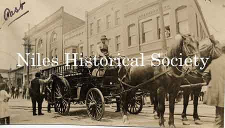

Ward-Thomas Museum


The History of the Niles Fire Department
Ward — Thomas
Museum
Home of the Niles Historical Society
503 Brown Street Niles, Ohio 44446
Click here to become a Niles Historical Society Member or to renew your membership
Click on any photograph to view a larger image, click on image again to zoom into photograph.
|
P01.369 |
The History of the Niles Fire Department. The new city building was built in 1889 at
a cost of $8,500.00. It was constructed of stone and brick and
contained a large room for storage of fire apparatus, box stalls
for horses, feed and storage rooms. The doors for the fire department
equipment are on the left side of the building on Franklin Alley.
In the summer months, an unpleasant odor from the horse stalls
often permeated the second floor chambers. |
|
| |
||
|
Niles Fire Department horse drawn engine on alley in Community Park, 1895. P01.376 |
The
first fire department was a volunteer organization formed in 1870
and served with a second hand fire engine bought from Pittsburgh
by James Ward. This fire equipment was purchased in 1875
and replaced in 1898. |
|
|
|
||
|
Fire apparatus on the run “Going
to a fire”. |
L) View of a horsedrawn fire engine standing on the corner of East Park Avenue and Furnace Street (which later became State Street). The corner building on the right is Guarnieri's Confectionary Store. The Verbeck Theatre, in left background, was constructed about 1904 on the west side of Furnace or East State Street near Park Avenue. Later, the Verbeck Theatre became the Opera House which was managed by Benjamin Warner. The Opera House caught fire in September 1920 when a film cannister ignited. |
 The Warner Brothers opened their new Warner Theatre in 1921 at this location. P01.1591 |
| |
||
|
P01.378 |
A large group of Niles citizens standing outside the fire station on Franklin Alley on a cold wintry day. The horse stalls have been converted to parking areas for the fire truck. The Fire Chief's car and two fire trucks leaving the fire station on a 'call'. |
P01.374 |
Niles Fire engine #1 inside fire station. Note the Dayton Tubeless tires on the front wheels and the tire chains on the outside of the double-tired back wheels. Photos ca 1915.
P01.371 |
P01.1588a |
P01.370 |
| |
||
1916 - Mr. Snelus, who was the mascot in this picture, told us the reason this picture was taken was to show off the new LaFrance Pumper. It was the latest in fire equipment, pumping 750 gallons per minute. It had Dayton airless tires and was chain driven. When this picture was taken there were only two paid men in the department, the captain and the driver. P01.377a |
Photograph taken at Labor Day Parade. Standing on the ground are(l-r): Martin J. Quigley(not a member of Fire Department); Frank Raub, volunteer; Captain John Davis, regular; Elia Williams, volunteer; Joe Gerald, regular; and Ray Applebee, volunteer. On the truck are(l-r): Firechief Lex Orr; Fred Welsh, Safety Director; George Scriven, regular; Charles Raub, volunteer; James Snelus, then a mascot to the firemen and now a captain in the Department; James Holloway, volunteer; Jack Rafferty, volunteer; and Nick Sayers, volunteer. Of those pictured, only Holloway, Scriven, Applebee, and Snelus are still living(1956). P01.377 |
|
|
In 1931 the old city building got a new addition on the front and the rest of the building was extensively remodeled for the Police and Fire Departments. Seated is Captain J.W. Davis and Joe Gerald (behind the wheel). Standing left to right is Chief James Swager, George Neiss and James Snelus, of Niles Town Hall and Fire Department and apparatus. P01.379 |
The Niles Fire Department truck is parked in the driveway on West Park Avenue. The Niles Bank Building, which opened L-R: Chief J. Swauger, Captain R. Williams, Cad Tompkinson, Ray Mullen, Al McGowan, Walt Thomas at wheel. Photograph ca 1935. |
Photo taken of the Niles Fire Station on West Park Avenue, Niles, Ohio. The Police Department offices were located on the side and second floor. One of the early city halls, this building was torn down during urban renewal and the drive through branch of National City Bank was built on this location. Dated September 1975. P01.372
|
|
|
||
Early site preparation of the Police-Fire-Court Complex on East State Street. S11.235 |
Early construction of the Police-Fire-Court Complex shows the second floor reinforced to accomodate the weight of the fire trucks. S11.332 |
A new Safety-Service Complex which houses not only the police and fire departments but also the city court which opened in 1977. |
|
|
||
1959 Niles Fire Department. |
1969 Niles Fire Department. |
|
Article from ‘Dustin the Cobwebs’ by Grace Allison It is bad enough when the city loses a residence or place of business due to fire, but it’s a calamity when the city’s fire station catches on fire. However, Niles had such a calamity occur during January 1875, when an extensive fire originated in the building occupied by the Falcon Steam Fire Co. The building stood on the north side of the Mahoning River on South Main at Water Street. near a drugstore managed by J. H. Leslie. When the Niles Fire Department was organized in 1870, James Ward and Truth Carter purchased a second hand horse-drawn fire engine in Pittsburgh. The chief engineer, T.D. Thomas, who was hired when the fire department was organized, was paid by the village and he devoted full time to the care of the department for the next 10 years. Two teamsters and a fine span of horses were kept on hand at all times, but any other firefighters were strictly volunteers. The morning of the fire, Thomas had been sleeping in an upper room of the engine house and when he awoke around 6:30 AM he discovered the room was afire. George Bear, a teamster sleeping in the room below, quickly sounded the alarm. However, he was not very successful, for after about three or four rings of the bell, the rope burned off, cutting off the fire department’s line of communication with the community. The horses, which were already hitched to the engine and hose cart, exited the building upon the first ring of the fire bell. But, while backing the rig down an icy incline to the river in order to pump water on the fire, the engine slid and fell against the trestle of the A.Y.&P. Railroads, throwing Thomas and Bear off the engine onto the ground. Fortunately, they promptly up-righted the engine. Within 12 minutes after the fire was discovered, they were still able to have two heavy streams of water squirting on the fire by using a 44 foot suction hose at a 12 foot perpendicular elevation. The hay stored on the second floor of the engine house made a ready tinder box of the building, as well as the row of tenant houses adjacent to and extending west of the engine house. The fire swept along between the roof and ceiling of the six- apartment tenant house, making it very difficult to control and extinguish the fire. The firemen worked until noon to bring the fire under control. The rooms occupied by the fire company were entirely burned but only the roofs of the tenant houses burned. At that time, only two tenants were living in the apartment complex- the Adams and Whitticar families. The furniture and other goods belonging to those two families were saved. The fire company lost uniforms, furniture, a bell worth $250, harnesses, 100 bushels of oats, and about 2,500 pounds of hay, the value of which was estimated at $800. William Ward, owner of the apartments, lost about $2,200 and was not covered with insurance. Evidently, after the 1875 fire, the fire department found a new home. The 1882 map of Niles located the Niles Fire Department on the west side of Franklin Alley, directly east of the Town Hall, between Park Avenue (James Street then) and Church Street, with an access onto Franklin Alley. George Bear became the fire chief in 1880. By 1896 Samuel Mosley was the chief and the 1899 City Directory listed J.W. McBride as the fire chief and George Neis as assistant fire chief. A.I. (Lex) Orr had become fire chief before the great fire of January 1904, when the city suffered a large fire loss due to ice, as a result of the big flood a week earlier. In 1875, the city purchased a new horse-drawn steam engine. At one time, when the city administration was considering the purchase of a motorized fire truck, it was decided that horses would be much more dependable since there was no danger of them running out of gas or getting blowouts. However, the officials’ second point of reasoning doesn’t make a lot of sense since the first tires on the motorized fire engines were “airless” tires. Lex Orr was still fire chief when the city bought its first motorized fire engine, a new American LaFrance Pumper, c.a. 1916. The latest thing in fire equipment, it pumped 750 gallons per minute, had Dayton airless tires, and was chain driven. “Pick,” a bay horse, served in the firefighter’s harness for five years from 1907 to 1912. The 25-year-old bay was still alive and working for the city of Niles for his room and board in 1928, but at a much slower pace than he had worked in his younger days! |
||
|
|
||


{kind=link}
{kind=link}
{kind=link}
{kind=link}
{kind=link}
{kind=link}
{kind=link}
{kind=link}
{kind=link}
{kind=link}
{kind=link}
{kind=link}